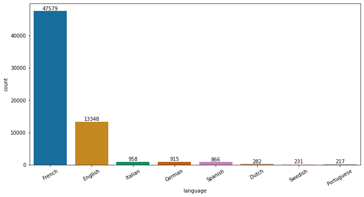

We can use the “language” field in the dataset. This is precise, technically speaking, but depends on the level of curation of the dataset. The language field is not fully reliable at this time.
We don’t have abstracts or full texts in the dataset, but on the basis of the titles alone, the (most likely) language of the publication has been determined. Note that an algorithmic process, based on the library py-lingua and using only the sometimes very short titles, has been used to create this data, so errors are to be expected. With the progress of corrections in the dataset, this will improve over time.
Code
def get_languages(bibdata): print("\nLanguages")# Find all the instances of "language" Element and its content xpath ="//z:language/text()" languages = bibdata.xpath(xpath, namespaces=namespaces)# Identify frequency of languages languages_counts = Counter(languages) languages_counts =dict(sorted(languages_counts.items(), key =lambda item: item[1], reverse=True)[:10])# Visualize using a simple bar chart lc = pd.DataFrame.from_dict(languages_counts, orient="index", columns=["count"]).reset_index().rename({"index" : "language"}, axis=1) plt.figure(figsize=(12,6)) pal = sns.color_palette("colorblind", len(lc)) fig = sns.barplot(data=lc, x="language", y="count", palette=pal) fig.set_xticklabels(fig.get_xticklabels(), rotation=30)for i in fig.containers: fig.bar_label(i,) plt.tight_layout() plt.savefig(join(wdir, "figures", "languages_counts.png"), dpi=300)return languages, languages_countslanguages, languages_counts = get_languages(bibdata)
Languages

Code
# Provide some results as a text. print("There are "+str(len(languages)) +" instances of language in the dataset.")print("At the moment, only "+str(len(languages_counts)) +" different languages are considered for analysis.")languages_perc = {k: v /len(languages) for k, v in languages_counts.items()}print("The most prevalent language is "+str(list(languages_perc.keys())[0]) +", with "+"{:2.2%}".format(list(languages_perc.values())[0]) +" of all entries.")
There are 64396 instances of language in the dataset.
At the moment, only 8 different languages are considered for analysis.
The most prevalent language is French, with 73.89% of all entries.